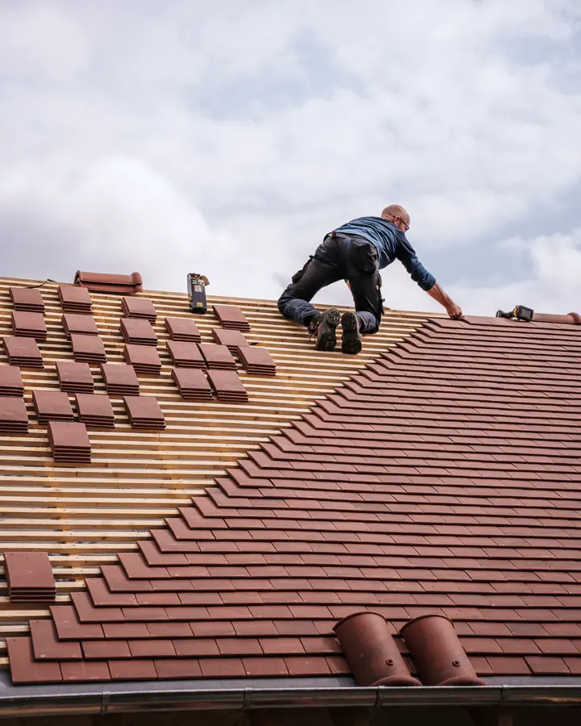
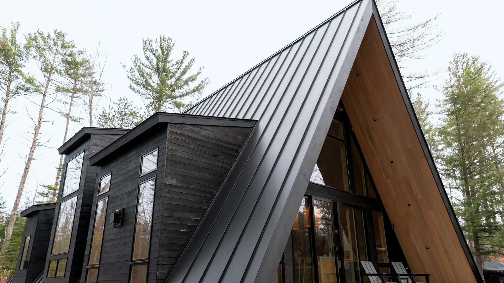
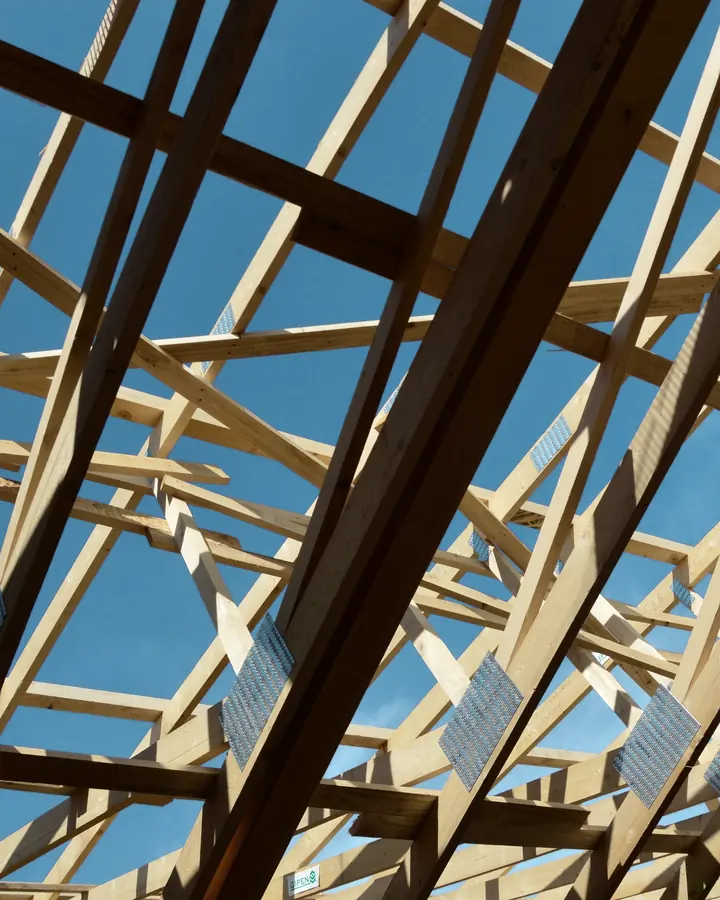
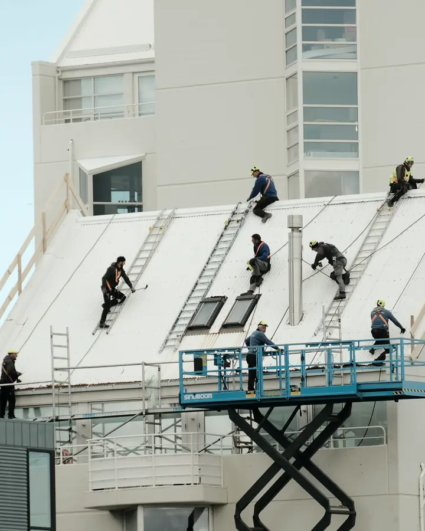
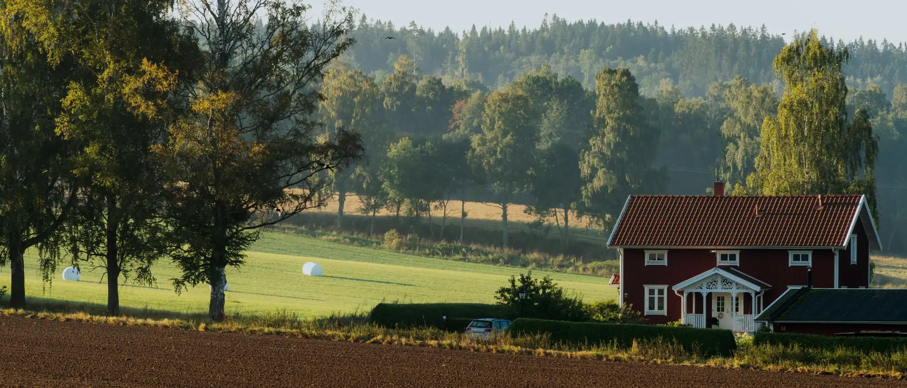
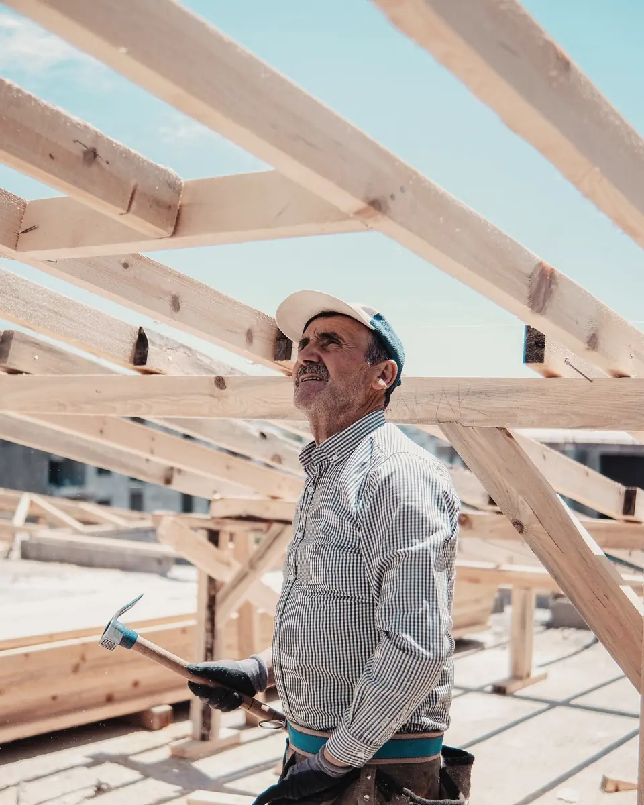
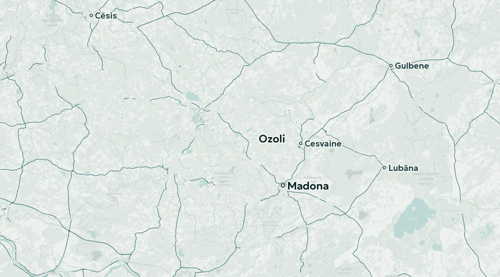

01Jumta segumsКровельное покрытие
Ieklājam jaunu segumu vai nomainām nolietoto: no latām un pretlatām līdz korei un pieslēgumiem.Укладываем новое покрытие или меняем изношенное: от обрешётки и контробрешётки до конька и примыканий.

Jumiķu darbi · Madonas novadsКровля · Мадонский край
Ieklājam jumta segumu, izbūvējam jumta konstrukcijas un atjaunojam vecus jumtus. Pirms sākam, vienojamies par darbu apjomu un cenu.Укладываем кровельное покрытие, возводим стропильные конструкции и обновляем старые крыши. До начала работ согласуем объём и цену.
DarbiРаботы
Jumiķu darbi ir mūsu pamatdarbība. Uzrakstiet, kāds jumts jums ir un kas ar to jādara, un pastāstīsim, kā to labāk izdarīt.Кровельные работы: наша основная деятельность. Напишите, какая у вас крыша и что с ней нужно сделать, и мы расскажем, как лучше.

01Ieklājam jaunu segumu vai nomainām nolietoto: no latām un pretlatām līdz korei un pieslēgumiem.Укладываем новое покрытие или меняем изношенное: от обрешётки и контробрешётки до конька и примыканий.

02Izbūvējam spāres un jumta karkasu jaunai ēkai vai piebūvei un sagatavojam pamatni segumam.Возводим стропила и каркас крыши для нового дома или пристройки и готовим основание под покрытие.

03Vecs vai tekošs jumts: apskatām, sakām, ko var salabot un ko labāk nomainīt, un izdarām.Старая или протекающая крыша: смотрим, говорим, что можно починить, а что лучше заменить, и делаем.

Jumts sargā visu, kas zem tā.Крыша бережёт всё, что под ней.
Tāpēc to darām rūpīgi, kārtu pa kārtai, līdz pēdējai detaļai.Поэтому делаем её внимательно, слой за слоем, до последней детали.
UzņēmumsКомпания
Dati no Uzņēmumu reģistra, Būvniecības informācijas sistēmas un VID publiskajiem datiem par 2024. gadu.Данные Регистра предприятий, Информационной системы строительства и публичные данные VID за 2024 год.
Būvkomersantu reģistrsРегистр строительных коммерсантов
Nr.19082
VID 2024. gadā: samaksāti 25,05 tūkst. EUR nodokļu.VID за 2024 год: уплачено 25,05 тыс. EUR налогов.
Pārbaudīt bis.gov.lvПроверить на bis.gov.lv
Kā strādājamКак работаем
Uzrakstiet, kur atrodas ēka, kāds ir jumts un kas jādara. Ja varat, pievienojiet pāris foto.Напишите, где находится здание, какая крыша и что нужно сделать. Если можете, приложите пару фото.
Apskatām jumtu uz vietas un izrunājam risinājumus un materiālus.Осматриваем крышу на месте и обсуждаем решения и материалы.
Sagatavojam tāmi ar darbu apjomu un termiņu. Sākam, kad viss ir saskaņots.Готовим смету с объёмом работ и сроком. Начинаем, когда всё согласовано.
Izbūvējam jumtu un pēc darbiem kopā ar jums apskatām paveikto.Делаем крышу и после работ вместе с вами осматриваем результат.

Kur esamГде мы
Juridiskā adreseЮридический адресOzolu iela 3-11, Ozoli, Liezēres pag., Madonas nov., LV-4884Ozolu iela 3-11, Ozoli, Liezēres pag., Madonas nov., LV-4884
Atvērt kartēОткрыть на картеKontaktiКонтакты
Uzrakstiet, kur atrodas ēka, kāds ir jumts un kas jādara. Atbildēsim pa e-pastu ar nākamajiem soļiem.Напишите, где находится здание, какая крыша и что нужно сделать. Ответим по e-mail со следующими шагами.